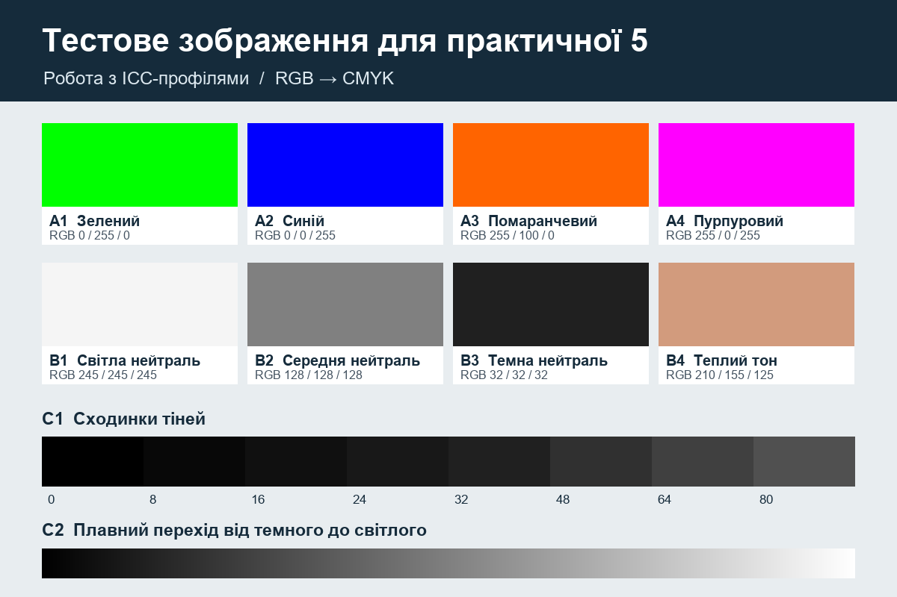

ПРАКТИЧНА РОБОТА №5 · 4 КУРС · 80 ХВ
Робота з ICC-профілями та підготовка зображень
Підготуйте копію зображення для газетного друку, порівняйте її з оригіналом і поясніть, де колір може змінитися.
Десять кроків по п’ять завдань. Використовуйте конспект лекції 7 і калькулятор. Власні спостереження та числові відповіді увійдуть до звіту. Прогрес зберігається у цьому браузері.
Вихідні дані та інструкція з конвертації
Навчальне замовлення — кольорова вставка для газетного друку. Джерело — PNG 1200 × 800 пікселів, RGB, 8 біт на канал, вбудований sRGB. Цільовий профіль — WAN-IFRAnewspaper26v5.
- Відкрийте PNG у Krita та збережіть вбудований профіль джерела.
- У копії виберіть Image → Convert Image Color Space. Задайте CMYK/Alpha, 8 біт на канал, WAN-IFRAnewspaper26v5 і відносний колориметричний спосіб відтворення. Увімкніть компенсацію чорної точки, якщо параметр доступний. Потрібний профіль можна отримати у викладача або на сайті розробника.
- Збережіть CMYK TIFF із вбудованим профілем. Відкрийте його повторно й перевірте модель, профіль та розміри.
- Порівняйте копію з PNG в одному редакторі на тому самому моніторі й масштабі. Якщо редактор або профіль недоступний, використайте контрольний TIFF для аналізу й зазначте це у звіті.

